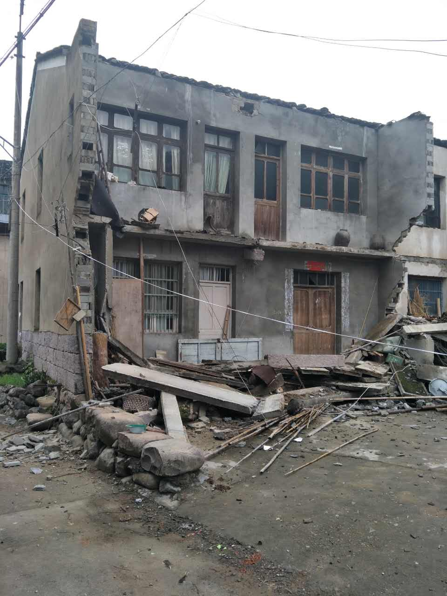
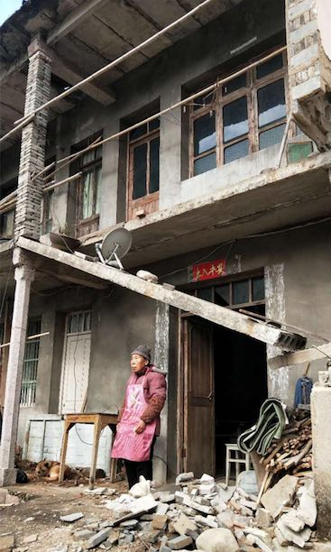
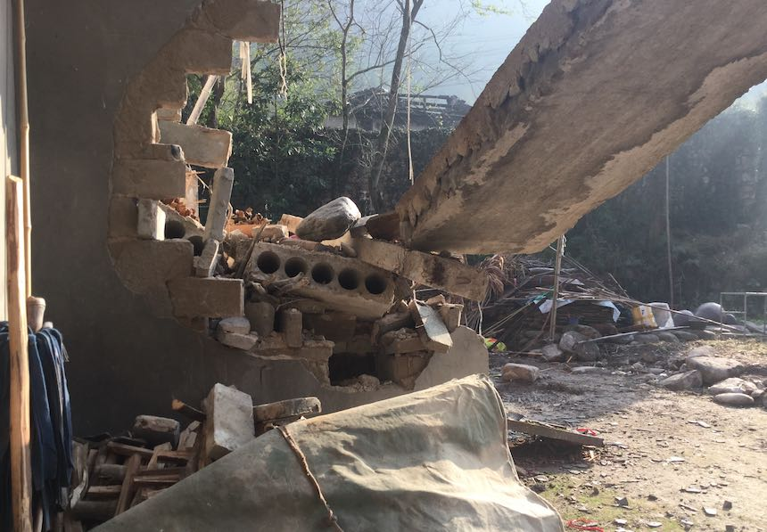
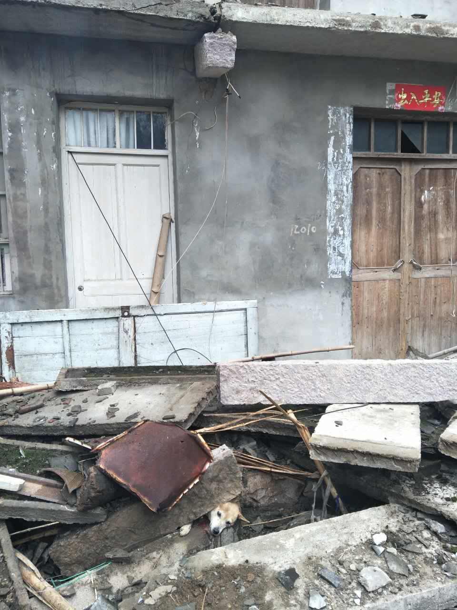

2017 年 12 月 3 日，留证网编译
【留证网】消息，12月2日凌晨4时许，移民户 ＂程小美和＂一家被轰隆一声巨响从睡梦中惊醒，自家房子在十天前因误拆变危房，未作处置的阳台轰然倒塌了。

图：被误拆 11 天后，阳台与屋檐轰然塌陷

图：刚被误拆时的房子
据村民反映，在误拆的第二天，方溪水库拆迁指挥部曾派人与事主一家商谈善后事宜，事主提出先恢复阳台原状，并在室内做加固，然后再商议赔偿的事，对方连这个基本要求都冷漠拒绝了，协商不欢而散。
斜塌着的水泥板，一头搭在废墟中另一块悬空的水泥板倾面上，另一头顶在一楼石条立柱与二楼砖砌承重柱之间，斜靠在立柱关节处，正好形成杠杆，见上图。情形本危如累卵，加上连日阴雨天气，不幸的事情还是发生了。

图：全塌前，从一楼门口向外望，水泥板悬空斜搭的样子

图：全塌时，无辜被压的土狗还有活气，右上角＂出入平安＂的横批赫然可见
有邻居问程小美和，房子不安全了，晚上要住哪？老太太说：我这把老骨头，都七十九岁了，还能住哪？不至于麻烦政府去住班房吧！大家都知道老太太在讲气话，因为此前曾有人威胁说，如果叔伯没地住，班房还空着！（点击查看此前材料）
大师曾言：白蛇娘娘压在塔底下，法海禅师躲在蟹壳里……莫非他造塔的时候，竟没有想到塔是终究要倒的么？一一屋倒了，人散了，法海披着蟹壳还在横行。
了解更多信息请关注：本专案首页